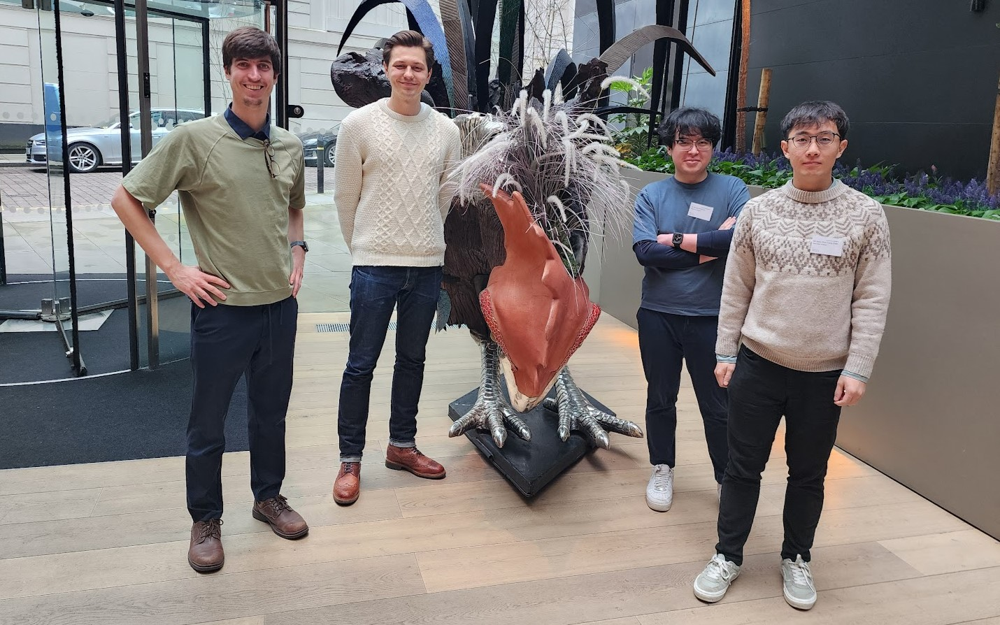
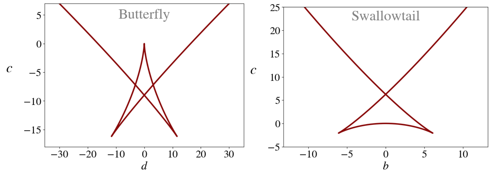
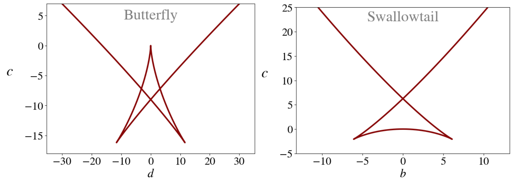
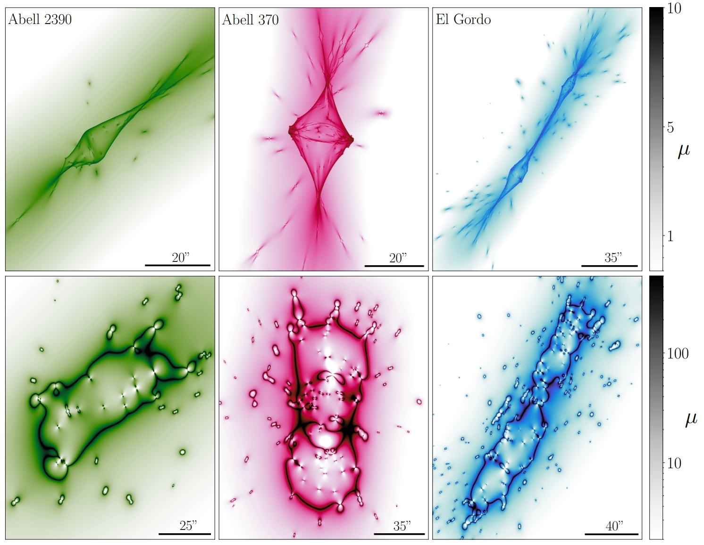
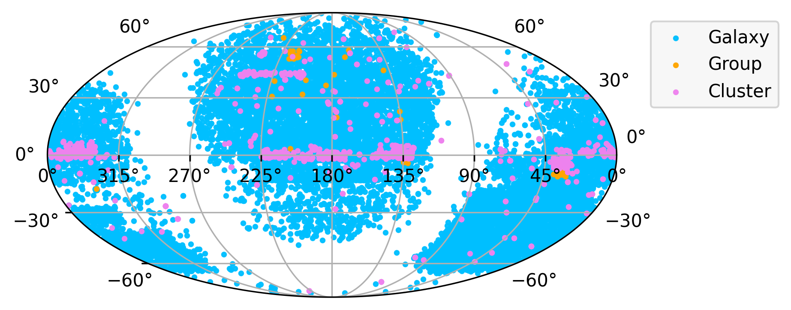

About

My name is Luka Vujeva, and I am a PhD Fellow working with Jose Maria Ezquiaga in the Center of Gravity, Niels Bohr Institute.
I grew up in Toronto, Canada, born to Croatian parents from Bosnia and Herzegovina. I did my undergraduate studies at the University of Toronto, where I did my bachelor's thesis and susbequent research with Peter Martin and Antoine Marchal at the Canadian Institute for Theoretical Astrophysics (CITA). During my time there, I studied thermal phase transitions in the interstellar medium to understand the first cold hydrogen structure formation in the galaxy, which is the initial seed for star formation.
I moved to Copenhagen for my Masters at the Niels Bohr Institute, where I worked with Charles Steinhardt at the Cosmic Dawn Center. There, I worked on leveraging the most massive objects in the Universe - galaxy clusters - as gravitational lenses to find the most efficient survey strategy for the James Webb Space Telescope (JWST) to search for the highest redshift galaxies in the Universe.
I stayed in Copenhagen to pursue my PhD with Jose Maria Ezquiaga in the Strong Group at the Center of Gravity. Our focus is on leveraging lensed gravitational waves to learn about the nature of dark matter, black holes, and cosmology.
Aside from physics, I am a massive music nerd. I love playing music with my friends, and in the past performed Croatian folk music around Canada and America. I am also very passionate about classical literature, and writing.
Research
My research primarily focuses on using the signals created by the mergers of distant black holes or neutron stars --- called gravitational waves --- to study dark matter through a mechanism called 'Gravitational Lensing'. For my full list of publications, check out my Inspire and NASA ADS pages.
Dark Matter Substructure and Higher Order Catastrophes
.png) 

In this project, we investigated the impact that dark matter subhalos have on lensed gravitational wave observables. We show that you can infer the existence of subhalos from even a single lensed GW detection due to deviations from the behaviors of caustics generated by single smooth dark matter halos. More specifically, a pair of lensed gravitational wave images with short arrival time differences and a relative magnification greater than 2 can only be produced by lenses with additional structure. These deviations are caused by higher order caustics, such as swallowtails and butterfly catastrophes. The paper can be found here: arxiv:2510.14953
Structure of Galaxy Clusters

This project investigated the impact that the structure of the dark and baryonic matter has on lensed gravitational waves by using state of the art cluster models made through deep electromagnetic observations of the clusters in combination with lens reconstruction. The paper can be found here: arxiv:2501.02096
lenscat

In order to facilitate the rapid follow-up imaging of candidate lensed gravitational waves, we build 'lenscat', a lightweight comprehensive catalog of known gravitational lenses with integrated tools for rapid crossmatching with gravitationtal wave (or any other) transient skymaps. The paper can be found here: arxiv:2406.04398, and the GitHub repository can be found here. Alternatively, you can play around with the web-app version here.
Contact
CV